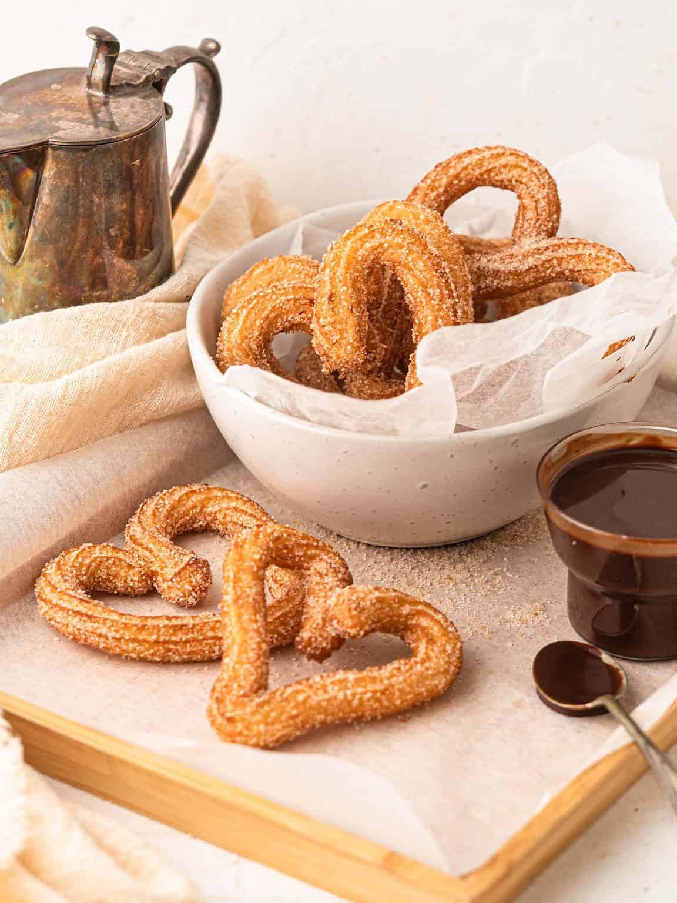

Mole
A churro is a cinnamon- and sugar-topped fried pastry dough stick with Spanish and Portuguese origins. Churros are similar to doughnuts, but they have ridges because they are piped out of a pastry bag. Because they are fried instead of baked, churros have a fluffy and tender interior with a satisfyingly crispy exterior.
Ingredients
- 1 cup water
- 2 ½ tablespoons white sugar
- ½ teaspoon salt
- 2 tablespoons vegetable oil
- 1 cup all-purpose flour/li>
- 2 quarts oil for frying
- ½ cup white sugar, or to taste
- 1 teaspoon ground cinnamon
Steps
- Combine water, 2 ½ tablespoons sugar, salt, and 2 tablespoons vegetable oil in a small saucepan and place over medium heat. Bring to a boil and remove from the heat.
- Stir in flour, stirring until mixture forms a ball.
- Heat oil for frying in a deep fryer or deep pot to 375 degrees F (190 degrees C). Transfer dough to a sturdy pastry bag fitted with a medium star tip.
- Carefully pipe a few 5- to 6-inch strips of dough into the hot oil; work in batches so you don't crowd the fryer.
- Cook until golden; use a spider or slotted spoon to transfer churros to paper towels to drain.
- Combine 1/2 cup sugar and cinnamon. Roll drained churros in cinnamon and sugar mixture. Serve warm.